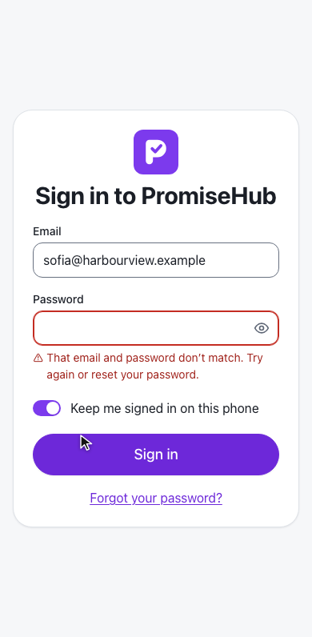
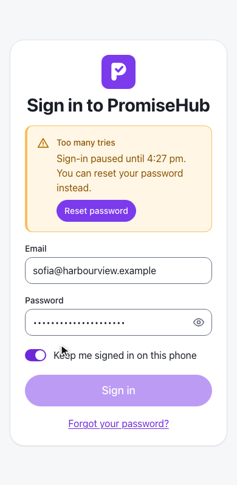
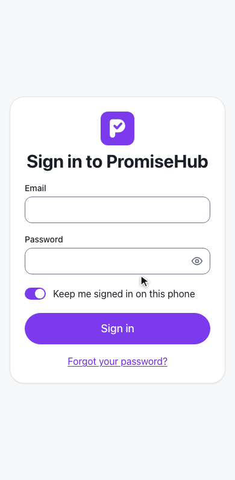
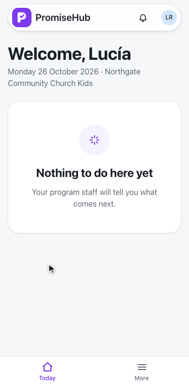
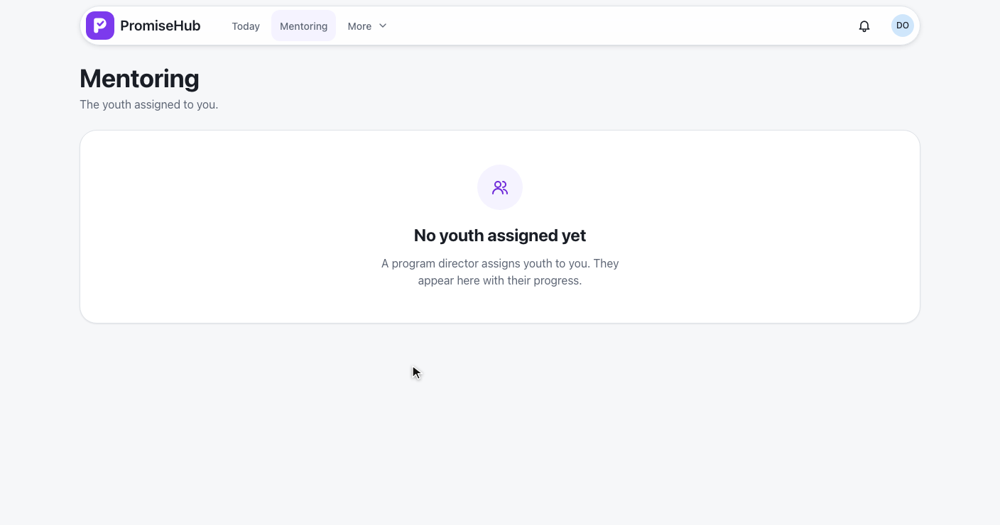
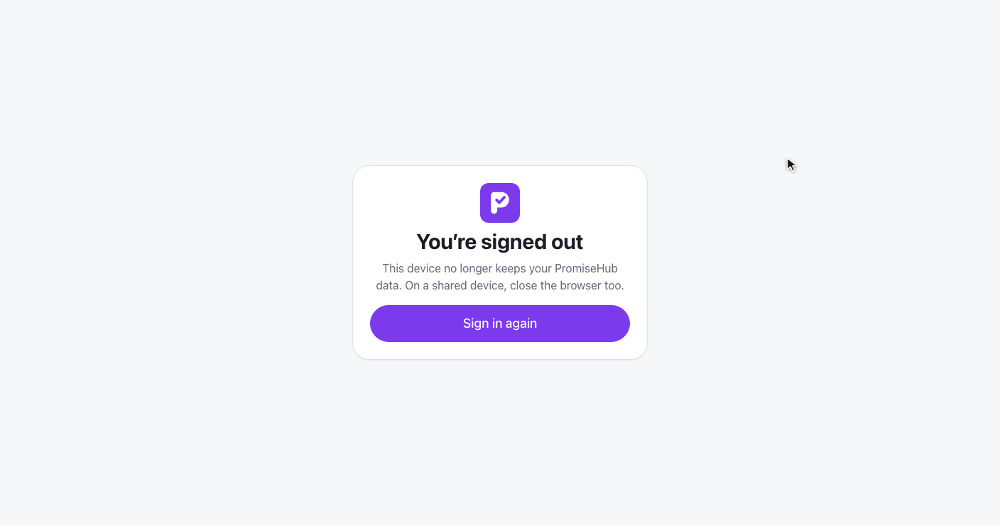

PromiseHub · Video 50
Sign in as a youth or mentor
A home per role, a lock, a clean sign-out and clear states
A home per role, a lock, a clean sign-out and clear states
| Role | Lands on |
|---|---|
| Youth | Learning, while it is on |
| Mentor | Mentoring, while it is on |
| Everyone else | Today |
| Opened a link first | That link |
frontend/projects/api/src/lib/session/role-home.ts
Default sign-in, then Learning.
Mentoring, nobody assigned yet.
Lucía lands on Today; /learning/me answers 404.
423 with the time the lock ends.


Audited: SignInLocked per organization · SignInUnlocked on reset
Ended on the server; Back shows sign-in.
Only after the right password.




| Case | Answer |
|---|---|
| Learning or Mentoring off | 404, lands on Today |
| Sixth try after five failures | 423 locked |
| Copied cookie after sign-out | 401 |
| Removed everywhere, right password | 403 account-deactivated |
Next: youth and mentors accept their invitations